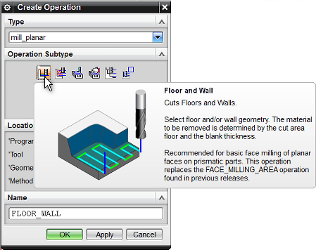

Balloon tooltips are now available for all operation subtypes in the Create Operation dialog box. The balloon tooltip includes the name and description of the suboperation, and a descriptive image.

The display of the picture and the tooltip is controlled by:
The Show Picture Tooltips in Create Object Dialog Boxes customer default. This customer default must be selected for NX to display balloon tooltips in the Create Operation dialog box.
The Show Balloon Tooltips on Dialog Options option in the Customize dialog box. This option is selected by default. To turn off the balloon tooltips and see only the name of the suboperations, clear this check box.
Show Picture Tooltips in Create Object Dialog Boxes customer default
|
Menu |
File→Utilities→Customer Defaults |
|
Location in dialog box |
Manufacturing→User Interface→Dialog boxes tab→Show Picture Tooltips in Create Object Dialog Boxes check box. |
Show Balloon Tooltips on Dialog Options option
|
Graphis window |
Right–click in the toolbar area→Customize |
|
Location in dialog box |
Options tab→Tooltips group→Show Balloon Tooltips on Dialog Options check box. |